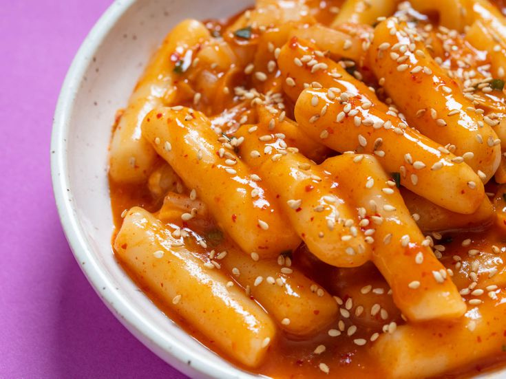

Tteokbokki
Ingredients
- 1 pound of cylinder shaped rice cake
- 4 cups of water
- 7 large size dried anchovies
- 6 x 8 inch dried kelp
- ⅓ cup hot pepper paste
- 1 tablespoon Korean hot pepper flakes (gochugaru)
- 1 tablespoon sugar
- 3 green onions, cut into 3 inch long pieces
- 2 hard boiled eggs, shelled (optional)
- ½ pound fish cakes (optional)
How to Make this Tteokbokki
- Add the water, dried anchovies, and dried kelp to a shallow pot or pan.
- Boil for 15 minutes over medium high heat without the lid.
- Combine hot pepper paste, hot pepper flakes, and sugar in a small bowl.
Remove the anchovies and kelp from the pot and add the rice cake, the mixture in the bowl, the green onion,
and the optional fish cakes and hard boiled eggs. The stock will be about 2½ cups.
- Stir gently with a wooden spoon when it starts to boil.
Keep stirring until the rice cake turns soft and the sauce thickens and looks shiny,
which should take about 10 -15 minutes.
If the rice cake is not soft enough, add more water and continue stirring until soften.
- When you use freshly made rice cake, it takes shorter time.
If you use frozen rice cake, thaw it out and soak in cold water to soften it before cooking.
- Remove from the heat and serve hot.
Cooking Tips for Tteokbokki
- A lot of: Sugar, fine ground gochugaru (buzz it in a coffee grinder if you have the coarse stuff)
- A little bit of: Soy sauce, gochujang
- Even less of: MSG, Beef Dashida, salt
- A tiny bit of: black pepper (use more if you prefer), dried anchovy and shrimp,
toasted and buzzed in a coffee grinder